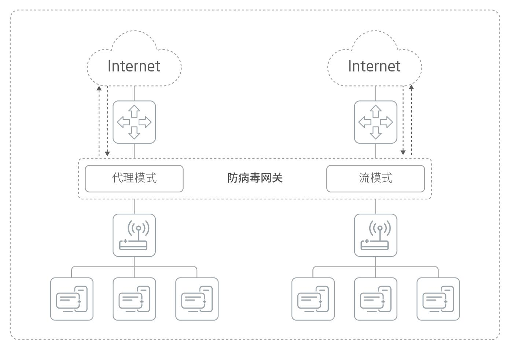

产品概述
赛博特安防病毒网关是专注于安全威胁新一代专业化安全网关产品，本产品采用ASIC芯片架构和独特的模块化功能设计理念，确保其具有的高性能、高安全、易操作等特性，真正满足用户不断变化的信息安全需求。灵活稳定的架构，使得防病毒网关集成了网络防火墙、入侵防御、防恶意软件、URL过滤等多种安全功能。
应用价值
赛博特安防病毒网关可有效抵御各类病毒和恶意软件对用户网络和业务系统的破坏，同时防病毒网关支持多通道的双向病毒过滤，可扩展性强，有效降低病毒防护成本，为用户的网络和关键业务正常运营提供坚实的保障。
产品亮点
高吞吐、低时延
通过ASIC芯片硬件方式加速，能获得极高的小包吞吐量。无需考虑业务流量中的大包和小包比例。整机的延迟极低，对网络流量的影响微乎其微。
强大的病毒库
业内针对已知病毒，都是采用特征匹配技术。赛博特安防病毒网关病毒库，病毒库大小多达15.8M。
领先的硬件架构
赛博特安防病毒网关，采用国内X86+ASIC芯片架构，内置ASIC网络处理器芯片和ASIC内容处理器芯片，内容处理器芯片用于处理内容检测加速，网络处理器芯片用于处理网络层数据转发，具有很高的数据转发性能，保证了设备在大流量环境下 的长期稳定运行。
先进的启发式和异常检测
为了针对未知的威胁和有害流量的检测与防护，赛博特安防病毒网关的防病毒扫描引擎结合了多种技术来检测已知的和尚未开发出特征码的新病毒。将多个前沿的检测技术组合在一起，提供了启发式扫描和异常检测。
强大的病毒查杀能力
防病毒网关使用深度文件分析和基于代理的应用引擎，把文件提交给内容层、协议层和启发式分析层等多个层次，使系统能检查到复杂的多形态恶意软件。为了进一步增加检测正确性，代理方式在检测前可对文件执行解包、解密及文件还原程序，复原出真实的二进制文件，使防病毒网关能解决规避方法。
深度检测与分析
多形态病毒为了逃避依靠静态文件特征检测病毒而对病毒进行加密产生了病毒变种。通过使用仿真引擎对文件做深度检测分析，赛博特安防病毒网关只需要一条签名就能检测同一个多形态病毒。这种情况下，不管病毒结构如何变化，只需要检查一条文件签名，而不需要为每一变种编一条签名。
应用场景
防病毒网关可在网关处对病毒进行初次拦截，配合赛博特安庞大的病毒库，可将绝大数病毒彻底剿灭在企业网络之外，帮助企业将病毒 威胁降至最低。同时防病毒网关系统串接在网络出口处及重点服务器前端，可实现一机多用，即实现对服务器的访问控制，也可使服务器 免遭病毒威胁。

防病毒网关可在核心网络处对病毒进行实时监测，可有效精准定位内网中的病毒感染源，帮助企业减少运维过程中工作量。